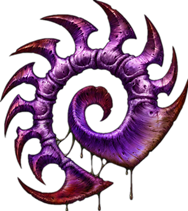

二.虫群之心故事

《虫群之心》讲述的是凯瑞甘如何统一虫群，并使虫群变得更强大，从而最终复仇蒙斯克的故事。故事一开始，便是蒙斯克派诺娃带人抓捕凯瑞甘的动画。最终，雷诺掩护凯瑞甘逃走的时候失散了，凯瑞甘回到了休伯利安号之后搜寻未果，于是自己坐着运输机离开了休伯利安号。
之后凯瑞甘得知蒙斯克放出消息，称已经立刻处死了雷诺，为了复仇，她决心重新控制虫族。随后凯瑞甘逐一统一了查尔星上的虫族，并通过进化，技能，使虫族更强大。凯瑞甘还在泽拉图的提醒下，重回虫族的发祥地，击败了原生虫族，同时获取了那里古老的力量，而她也失去了人型，变回了刀锋女王的外形。但是她仍然保留着人类的理性以及对雷诺的感情。在返回自治联盟星域之前，她还去摧毁了混元体的实验室，在那里她又遇到了纳鲁德博士(杜兰)，在杀死纳鲁德时，她感受到了萨尔娜迦的强大力量，不过她认为眼下的主要任务是复仇蒙斯克。返回自治联盟的空域，她联系上了休伯利安号，在大副马特奥那的帮助下找出了藏着雷诺的监狱船，她亲率部队救出了雷诺，但雷诺见到她恢复刀锋女王的外观之后非常失望。
最终虫族大军攻入了克哈星--自治联盟的主星。蒙斯克企图用灵能干扰器消灭虫族，但原生虫族的部队不受其影响，它们摧毁了干扰器，虫族大军顺利攻入了首都。这时，雷诺的部队也赶来帮忙，凯瑞甘顺利的攻入了蒙斯克的宫殿，此时蒙斯克十分淡定，因为他还有萨尔娜迦神器做最后的王牌。凯瑞甘几乎被神器杀死，在紧要关头，雷诺出现了，他击倒了蒙斯克，破坏了神器的操作装置，凯瑞甘则亲自对蒙斯克进行了灵能侵袭。一切结束了，雷诺和凯瑞甘站在宫殿顶，两人沉默了很久，最后凯瑞甘对雷诺感谢之后飞上了天空。雷诺也重新表达了对凯瑞甘的爱意。